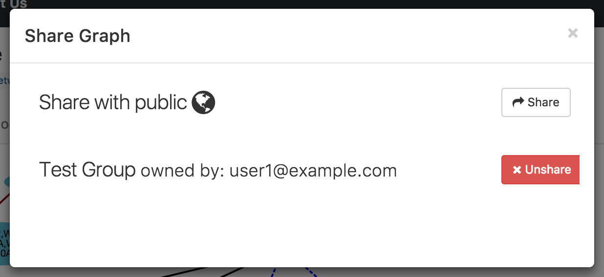

9. Sharing Graphs¶
A user may share a graph and its layouts with groups to which the user belongs.
9.1. Sharing graphs with group(s)¶
There are two ways to share a specific graph owned by the user: the REST API and the Share Button. A user may share a graph with multiple groups. In order to share a graph, the user must own it. In addition, the user must be a member or the owner of the group he/she wants to share the graph with. Sharing a graph allows all the members in the group to access the graph. Un-sharing a graph from a graph means that no one else in the group will be able to access that graph anymore.
This image shows the sharing panel displayed when a user clicks on the Share button on the Graph Page. In the following example, the graph is only shared with a group name ‘Test Group’ created by user1@example.com. The user can click on the Share button next to Share with public text to share the graph with everyone.

9.2. Sharing layouts with group(s)¶
Similar to a graph, a layout may also be shared with a group. In order for a layout to be shared with a group, the graph must already be shared with the group. Currently, the only way to share a layout is through the Layouts tab. Initially, only the creator of a saved layout is allowed to access it. Note that a layout may be created by a user who is not the owner of the graph, as long as the layout creator can access the graph (because the owner has shared it). Sharing a layout changes its access as follows:
Public graphs
The layout is also publicly available, i.e., to all users of GraphSpace.
Shared graphs
The layout is accessible to every user who is a member of a group with which the graph is shared, as long as the layout creater is also a member of that group.
GraphSpace](http://www.graphspace.org) allows users to share a layout using the following steps:
- Click on the
Layoutslink above the graph. - The layouts panel shows two types of layouts:
- Private Layouts - The user has created them in earlier sessions by manually modifying the positions of nodes and edges. But the user has not shared them with any other user.
- Shared Layouts - These layouts were created by the user who has access to this graph and shared the layout with other users who have access to this graph.
- Click on the
Sharelink next to the layout name of a private layout you want to share with other users who have access to this graph.
Note: The icons next to each layout name allow the user to (i) change its name, (ii) share it with other users who have access to this graph, (iii) delete this layout.